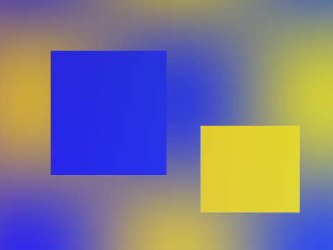
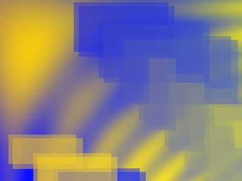
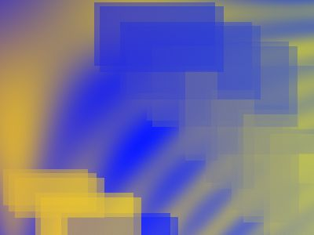

What we saw at the harbour
We got there early, before the boats went out, and the light did the rest.
By nine the whole place was busy again.

This text can't be hovered, so the picture is all the pointer finds.
We got there early, before the boats went out, and the light did the rest.
By nine the whole place was busy again.
Blogs full of AI pictures are what the button is for.


Pack light, stay longer.
So the button is the only way to show it again.
running…